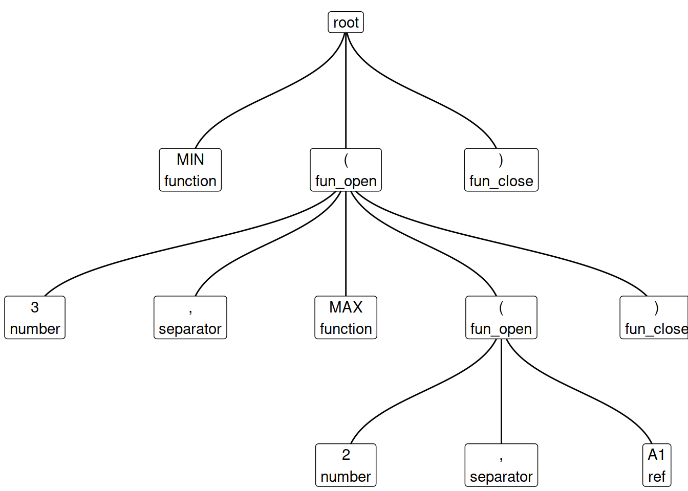

lexl separates Excel formulas into tokens of different types, and gives their depth within a nested formula. Its name is a bad pun on ‘Excel’ and ‘lexer’. Try the online demo or run demo_lexl() locally.
library(lexl)
x <- lex_xl("MIN(3,MAX(2,A1))")
x
#> level type token
#> 1 0 function MIN
#> 2 0 fun_open (
#> 3 1 number 3
#> 4 1 separator ,
#> 5 1 function MAX
#> 6 1 fun_open (
#> 7 2 number 2
#> 8 2 separator ,
#> 9 2 ref A1
#> 10 1 fun_close )
#> 11 0 fun_close )
plot(x) # Requires the ggraph package
Not all parse trees are the same. The one given by lex_xl() is intended for analysis, rather than for computation. Examples of the kind of analysis that it might support are:
The tidyxl package imports formulas from xlsx (spreadsheet) files.
The Enron corpus contains thousands of real-life spreadsheets.